Administrative Workflow
Developed a web-based system for managing application submissions from regional government agencies, including request intake, admin review, and status decisions.
Web Application Project
SIPENA is a web-based administrative management system designed to streamline application submission management from regional government agencies (OPD), from public requests through admin review, acceptance, rejection, status updates, and applicant notifications.
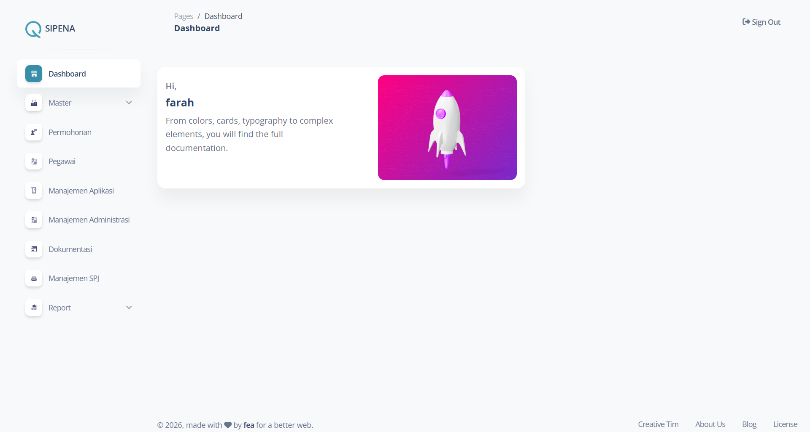
The project focuses on administrative workflow efficiency for application requests submitted by OPD users. The backend was built with Laravel CRUD modules, server-side DataTables for scalable listing and search behavior, and a relational database model consisting of 20 interconnected tables to support the full workflow.
Developed a web-based system for managing application submissions from regional government agencies, including request intake, admin review, and status decisions.
Built backend CRUD modules for master data, employees, request management, application management, documentation, and administrative records.
Implemented searchable, paginated, server-side DataTables to make large administrative data sets easier to process and manage.
Designed and implemented a relational schema with 20 interconnected tables supporting the full lifecycle of submissions and administrative entities.
Implemented review actions that let admins accept or reject requests and update the application status accordingly.
Connected request outcomes with applicant-facing status updates and notifications, including accepted and rejected decisions.
The flow begins when an applicant submits a request. The system forwards the request to the admin side. After a successful admin login, the admin can view and manage requests, then confirm each submission with one of two decisions: accept or reject.
The applicant fills in the public request form with PIC, OPD, application name, contact, and email information.
The system records the request and makes it available in the admin request management table.
The admin logs in, opens the request detail, and checks the submitted OPD and application information.
If accepted, the request status is updated and a generated code can be provided. If rejected, the status is marked as rejected.
The applicant receives an outcome notification for either the accepted request or the rejection result.
The screenshots are ordered according to the project flow: public pages, admin login, dashboard, master data, request processing, confirmation modals, and supporting CRUD forms.
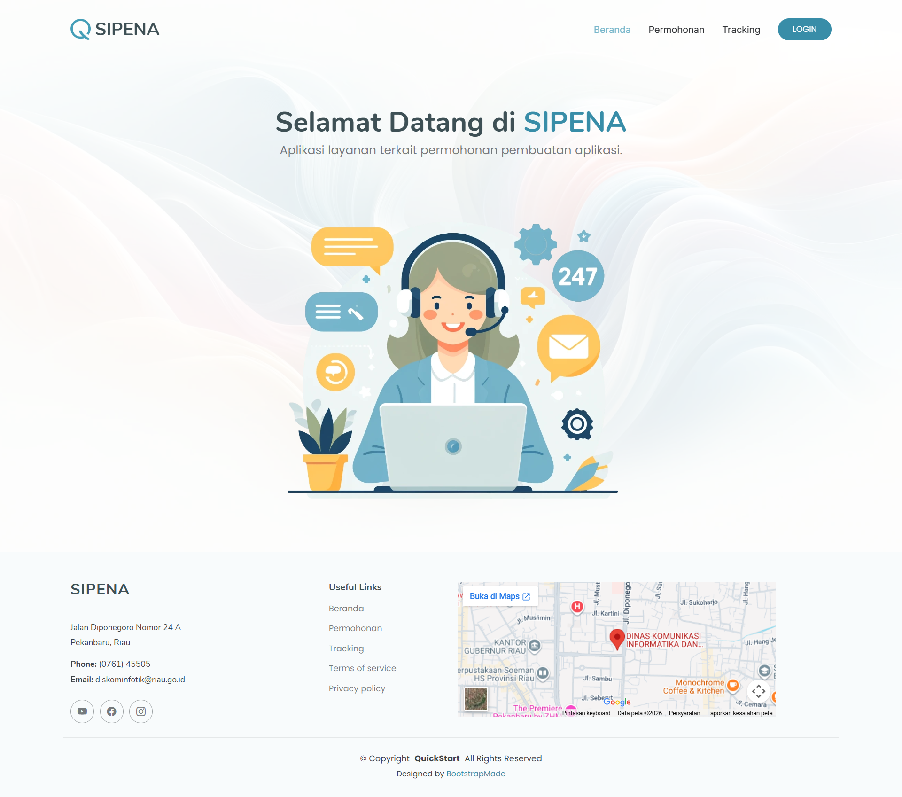
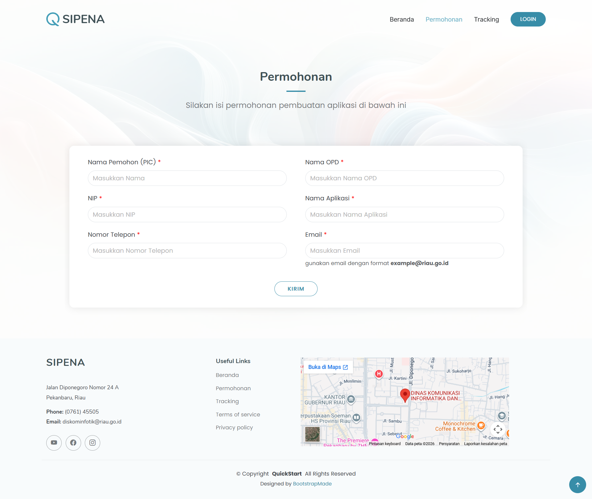
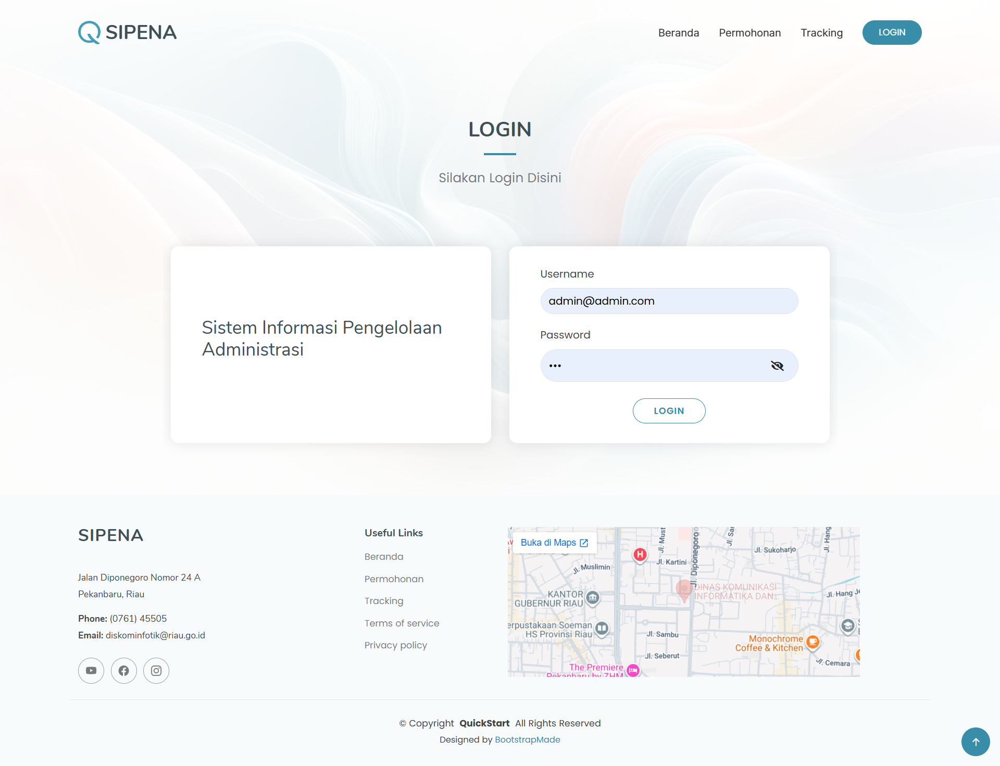
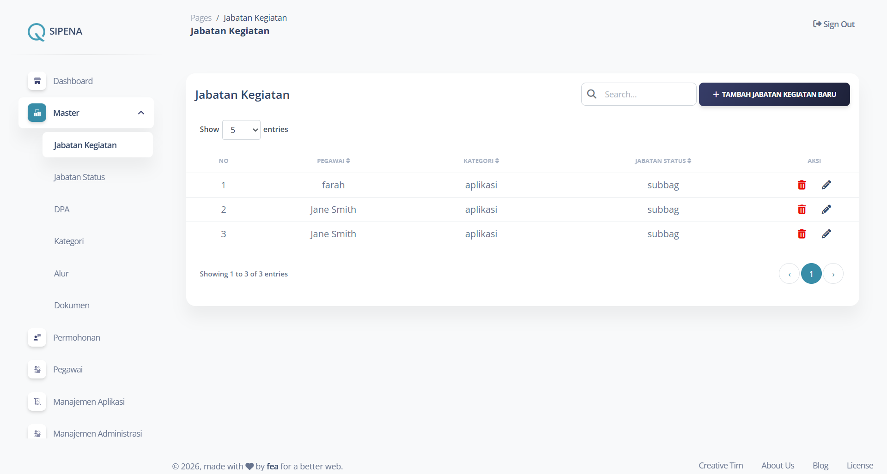
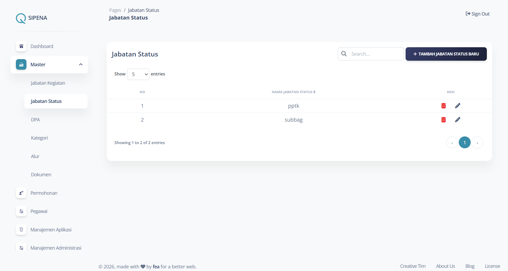
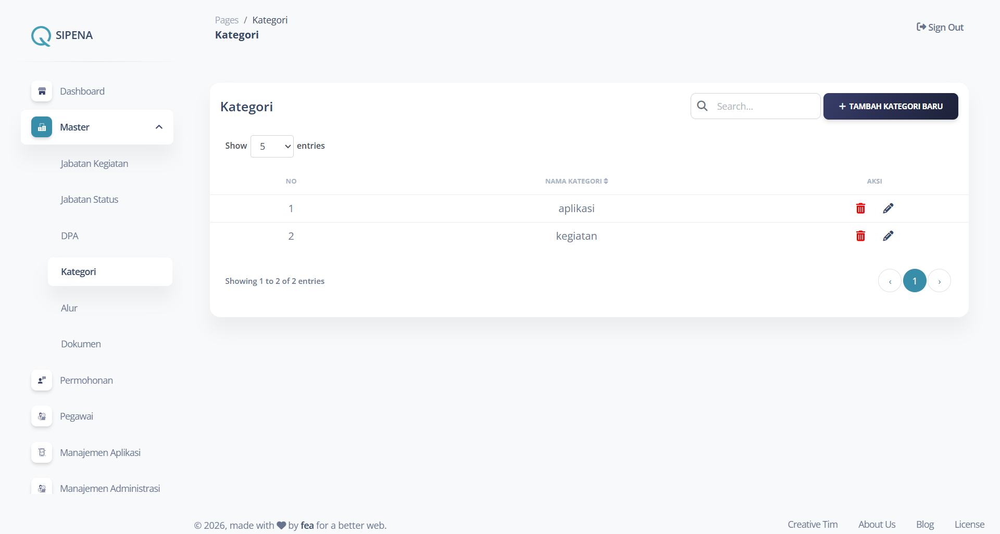
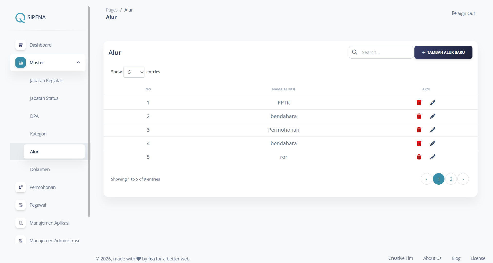
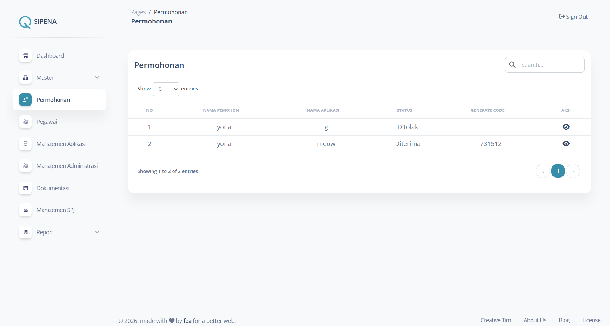
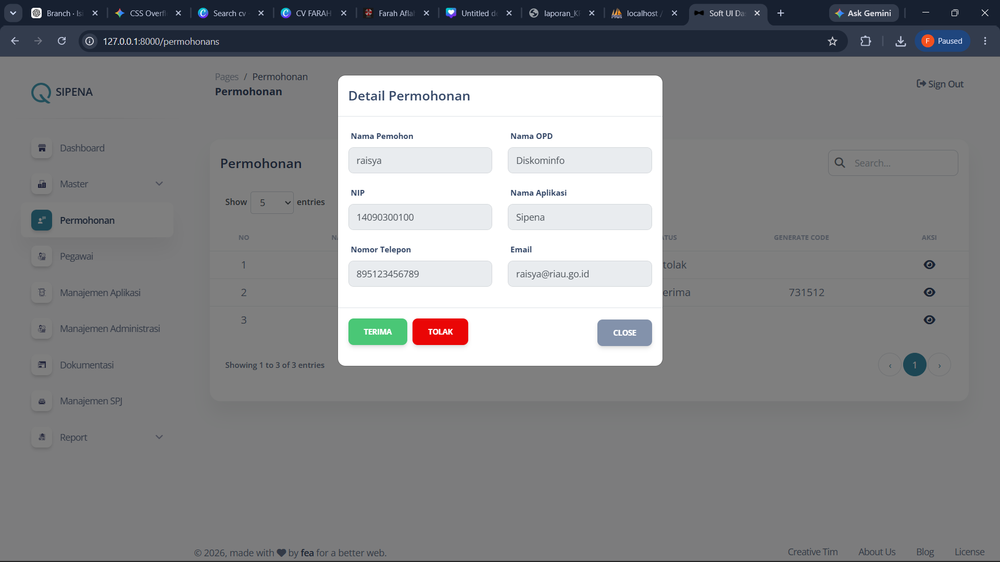
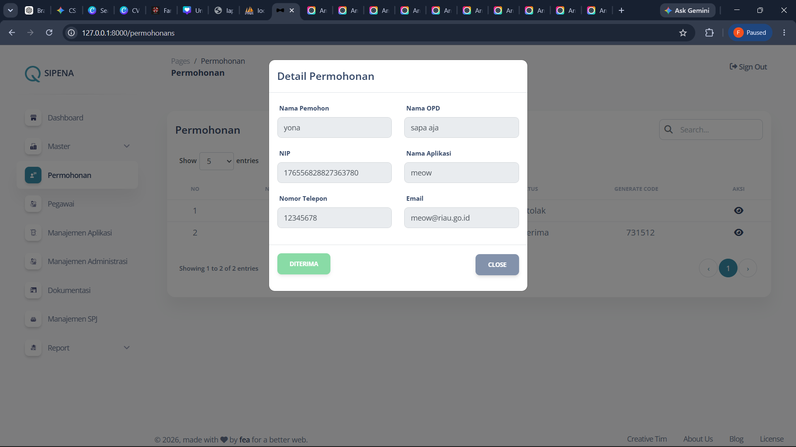
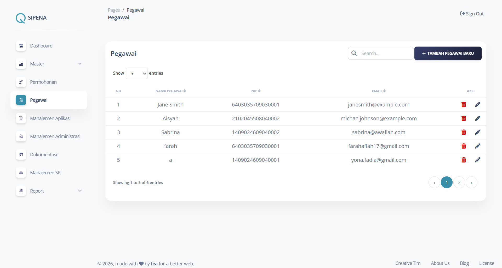
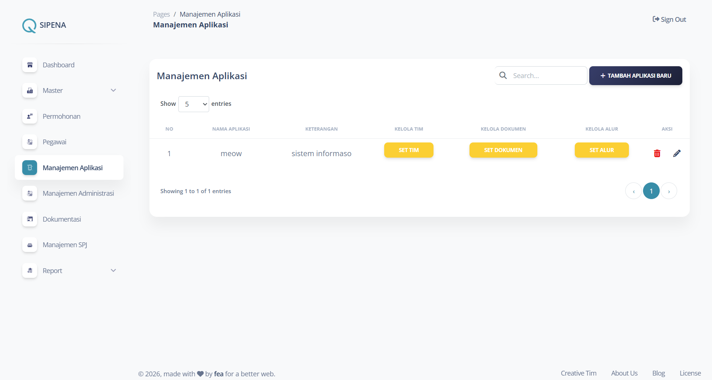
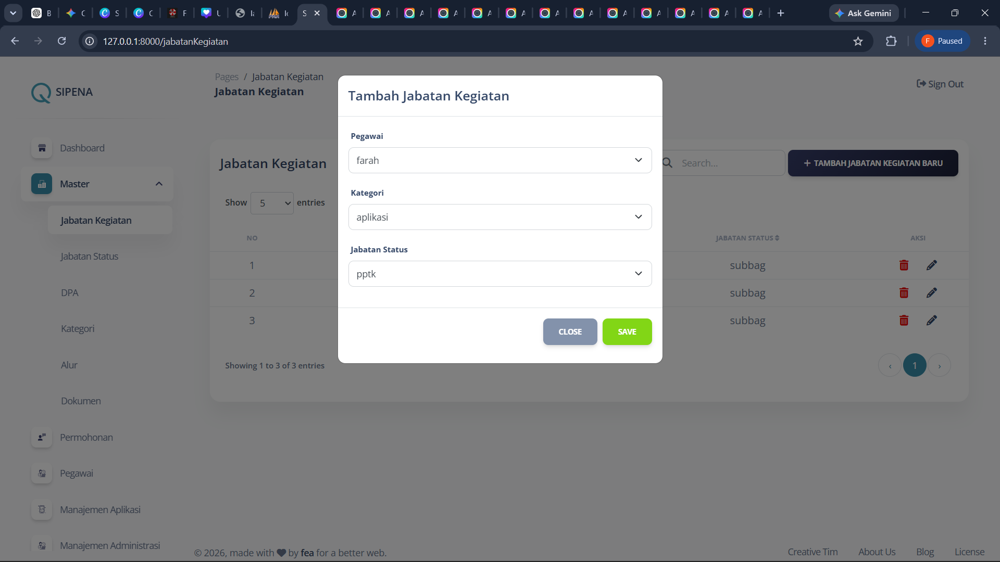
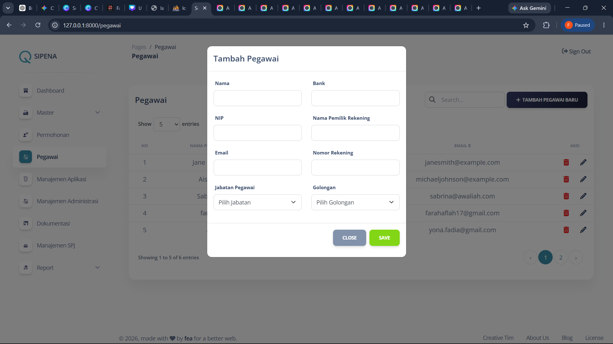